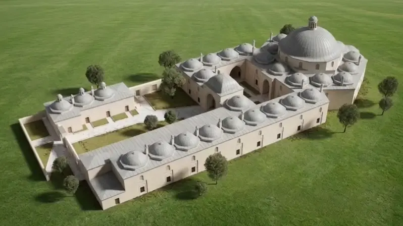

"Şifanın, Bilimin ve İnsanlığın Buluştuğu Merkez"
Sultan 2. Bayezid Külliyesi'ndeki binaların en önemlisi ve belki de kalbi, Darüşşifa denilen hastanesidir. Bu hastane hem mimarlık ve hem de tıp tarihinde önemli bir yere sahiptir.
15. Yüzyılda yapılmış olan bu yapı, merkezi ve ayrıntılı planlı hastanelerin tarihteki öncüsü olarak kabul edilir.

Avrupa'da akıl hastalarının yakıldığı bir dönemde hem ruhsal ve hem de diğer hastalıkları olanlar tedavileri için müzik, su sesi, güzel kokular ve diğer birçok gerekli şey düşünülerek planlanan bu mekân; merkezi sistemi ve dönemine göre çok ileri, hatta 18 ve 19. yy.'lardaki hastane yapılarına ışık tutacak kadar mükemmel olan bir havalandırma sistemi getirmesi açısından Rönesans dönemi hastane mimarisinde Ospedale Magiore'ye nazaran daha etkili olmuş ve çığır açmış bir örnektir.
Benzerlerine, batıda ancak 150-200 yıl sonra rastlanan bu hastane, 3 bölümden meydana gelmiştir.
İlk bölümde, hizmet odaları, poliklinik odaları, diyet mutfağı ve ilaç depoları bulunur.
İkinci bölümde hekimbaşı ve yardımcılarının olduğu yönetici odaları vardır.
Üçüncü ve en önemli bölümü merkezi planla yapılmış yataklı tedavi bölümüdür. Bu bölüm 6 kışlık, 4 yazlık hasta odası ile bir müzik sahnesinden meydana gelir.

"Bu hastaneyi diğerlerinden ayıran en büyük özellik tedavide dönemin hekimlik bilgilerinin yanında müzik makamlarının kullanılmış olmasıdır."
🎵 Müzikle Tedavi: Tedavi esnasında 10 kişiden oluşan müzik grubu tarafından çalıp söylenen müzik makamlarının, çeşitli hastalıklara iyi geldiği düşünülürdü.
💧 Su Sesi Terapisi: Yapının tam ortasında bulunan şadırvandan akan suyun çıkardığı ses tedavinin önemli bir parçasıydı ve hastaları rahatlatmaya yönelikti.
🌸 Koku Tedavisi: Darüşşifada müzik ve su sesine ek olarak ayrıca koku tedavisi de uygulanırdı. Darüşşifa avlusu ve çevresinde yetiştirilen çeşitli bitkilerin yaydığı kokular da tedavinin önemli bir parçasıydı.
🧺 Meşguliyet Terapisi: Ayrıca meşguliyet de bu hastanede tedavi amacıyla kullanılıyordu. Hastalar sepet ve örgü örmenin yanı sıra çeşitli el işleriyle meşgul edilir, dertlerinden ve düşüncelerinden uzaklaştırılmaya çalışırlardı.

Edirne Darüşşifası, kuruluşunda çok yönlü bir hastaneydi. İlk yıllardaki kadrosunda 1 hekimbaşı, iki hekim, iki cerrah, iki göz hekimi ve bir eczacı bulunurdu. Toplam personel sayısı 21, hastanenin yatak sayısı ise 32'ydi.
Külliyenin vakfiyesinde belirtildiğine göre hekimbaşı günde 30 akçe, tabipler 10'ar akçe, göz mütehassısı (Kehhal) ve cerrahlar 7 akçe, katip 4 akçe ve diğer çalışanlar 3'er akçe ücret almaktaydı.
Kullanılan bu yöntemler zaman içinde daha çok akıl ve ruh hastalıklarına iyi geldiği anlaşılınca, başlangıçta her türlü hastanın tedavi edildiği bu hastane sonraki yıllarda sadece psikolojik hastalıkların tedavi edildiği bir merkez haline gelmiştir.
Sadece Edirne'ye değil, çevresindeki şehir ve köylere de aralıksız olarak 400 yıl gibi uzun süre hizmet vermiş olan bu şifa yurdu, Osmanlı İmparatorluğunun zayıflaması, bu tür hizmet alanlarını ayakta tutan vakıf sisteminin dağılması ve ardından gelen işgallerle önemini yitirmeye başlamıştır.

Tıp tarihimizin bu önemli yapısı, 1914 yılında Türk Psikiyatri hekimliğinin önemli isimlerinden Doktor Mazhar Osman'ın, kötü koşullarda tecrit edilmiş olan son akıl hastalarını, zincirlerinden çözerek İstanbul'a götürmesiyle buradaki parlak hikâye, hüzünlü bir şekilde sona ermiştir.
"Akıl Hastalıklarından Gönül Yaralarına: Beş Asırlık Bilim Köprüsü."